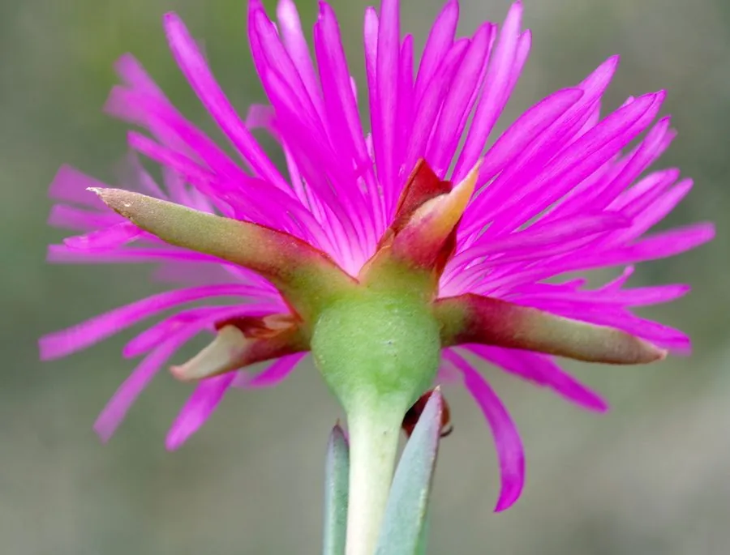

多肉植物 · 植物界
松叶菊 Lampranthus spectabilis

番杏科松叶菊属多肉，叶片细长似松针，春夏开出大量紫红色花朵，原产南非，是花量惊人的地被与盆栽多肉。
- 分类
- 门被子植物门纲木兰纲目石竹目科番杏科属松叶菊属
- 栖息环境
- 南非干旱地区的石质坡地与沙质草原
- 地理分布
- 原产南非，世界各地引种栽培，中国南方常见
- 保护级别
- 暂无评估
物种志
松叶菊为番杏科松叶菊属的多年生肉质草本，株高 30–60 厘米，茎匍匐或斜升，分枝多。叶片对生，细长圆柱形，长 3–5 厘米，灰绿色，表面有细小水泡状细胞，形似松针。花单生或数朵聚生，紫红色或粉红色，直径 4–6 厘米，花瓣多数、有光泽，花期春末至夏季，晴天开放、阴天闭合；果实为蒴果。
松叶菊原产南非的干旱地区，喜阳光充足、温暖干燥和通风良好的环境，耐旱、怕积水，不耐严寒。它花量大、花色艳丽，盛花期可铺满整个植株，是南非花卉中的代表种类，适合盆栽、花坛和地被栽培。栽培用排水良好的沙质土，生长期干透浇透，花前增施磷钾肥；繁殖以茎段扦插为主，也可播种。
形态与习性
- 株高30–60 厘米，茎匍匐或斜升
- 叶片细长圆柱形，灰绿色，似松针
- 花期春末至夏季，花紫红色
- 光照极喜光，晴天开花、阴天闭合
- 水分耐旱，干透浇透
- 土壤排水良好的沙质土
- 繁殖茎段扦插为主
- 主要用途盆栽、花坛、地被观赏
趣味知识
- 松叶菊的叶片细长如松针，花朵却像小菊花，因此得名。
- 它花量极大，盛花期几乎看不到叶子，是南非著名的花卉。
- 花朵晴天开放、阴天闭合，单朵花只能开几天。